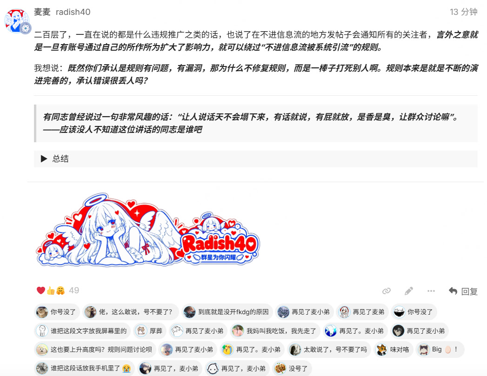

？？？佬这是咋了，不管怎么说还是谢谢佬
不想多说啥了，看到就领吧，希望能有机会把LDC都还给大家。
发生什么了佬，昨天点你头像都显示不出来信息了
感谢佬，太牛逼了
感谢鸡毛佬
还是感谢大佬了
不要啊 佬 你可是我最喜欢的公益站佬
我刚刚的帖子也被举报了
完了,登陆一下,毛都没了
手机领不了｡°(°¯᷄◠¯᷅°)°｡
你们床上也这么快吗
小鸡毛怎么啦？
我昨天还和朋友安利小鸡毛的，他马上3级还说下次抢注册码
你怎么了，佬
前几天好不容易抢到了注册码，还没用几次就陨落了
希望佬友不要灰心啊 小鸡毛一直是最好用的公益站了
到底发生什么事了，话说你们也太快了
我去，怎么了鸡毛佬，鸡毛佬你怎么了啊
我说怎么昨天突然帖子没有了，不知道啥情况
鸡毛佬 谢谢鸡毛佬，你依旧是我最爱的鸡毛佬！
鸡王别走啊,舍不得啊,群众里面有坏人
鸡毛佬，请问发生了啥啊，昨天还好好的开蹬，今天就要停止维护了
讨论都不让讨论了，秒删帖？到底谁在举报？
所以说怎么了？昨天我看所有帖子也都找不到
杀红眼了，到底搞了谁的利益，掉毛东西
谁知道发生啥事了？
鸡毛佬你不要走
发生什么事了？怎么帖子全无了
怎么帖子全无了？

我靠，谁啊这么恶心。
到底什么事了？然后大伙们这是什么手速啊，也太快了！
所有互联网社区都是这样子的，把大佬一步步逼走。
鸡毛佬 怎么啦 一脸懵逼
送一句
敌军围困万千重，我自岿然不动。
▎ ——《西江月·井冈山》
鸡毛佬 我想你了
公益寒冬 那些举报的怎么这么坏啊
这是发生啥了，一脸懵逼的进来.
应该是动了中转站的利益了
哎,啥也不能说,都在酒里
发生了什么，有佬告知一下吗？鸡毛佬被攻击了吗？
鸡毛佬不要走啊。。昨天还在爽用佬的gpt呢
发生了什么事，虽然没用过但是鸡毛佬的公益还是知道的呀。
发生什么事情了，今天点公益站公告的链接直接404了，群众有坏人？
别啊 佬友 别因为一颗老鼠屎 坏了好心情 支持你的佬友还是占多数 一直都感谢你好好维护的公益站 你的努力 付出我们都看在眼里
这是我坚见过最好的公益站，到底是谁在把水搅浑
（帖子已被作者删除）
帖子都被秒删的，不知道为什么，讨论的帖子都是
鸡毛佬不要啊 ，我还说一定要抢到注册码
中转站的利益？举报就能秒删帖，这么厉害吗，哪个中转站这么大的能量

有时候真的看不懂l站的举报，审核也是感觉几乎100%能过
那也不该被举报成功，感觉小鸡毛没违反规则吧
今天刚刚攒够10个金牌，惨兮兮
中转站举报的？举报理由是什么呢，这个举报审核机制到底是什么，如果同类型帖子被莫名大量举报，也能被通过吗？

我刚才就发了一个帖子 讨论一下鸡毛佬的站 结果就被举报了
群众里面有坏人啊，我看讨论的贴都秒没的
嗐，老鼠屎还是多啊，不知道是出于用不上嫉妒心理还是啥
我说怎么刚留言完就没了
l站的机制就是这样，l站早该改变了…
到底发生什么了
发生什么事情了，最近都在用很好用
也就是几分钟的事儿 就被抬走了。说违反了规则。。。
举报不是人工审核的吗？怎么回事呢？
太难受了佬，最喜欢的公益站没有之一
举报多了直接给你沉的我记得
发生肾么事了啊
LDC我不要了，给我开门呐！
唉，最近都没用，一直签到，怎么回事，到了关站了，用过都知道佬无私，自掏腰包做公益
感谢佬的公益
你怎么才来，不像是你的风格
大概能脑补些东西，上次领到了佬的邀请码，注册了还没用，寻思囤起来的。
这段时间辛苦了，摸摸
能不能把这些恶意举报的封了
继续探继续报 鲤鱼佬
永远支持鸡毛佬，最负责的公益站，大爱
谢谢鸡毛佬 站内的举报我讲真话有点太恶心了
感谢鸡毛佬的付出，累了就不做了，LDC不要了，非常好的公益站
但是审核完之后帖子就会重新出现了，而且不会再吃举报
能不能抓出是谁呀，真恶心
到底是谁啊，搞得一大早的好心情都没了
举报人多就自动移除吧，感觉这个机制很有问题，起码举报人需要承担责任，要不然都随便举报
千言万语，感谢鸡毛佬吧，谢谢一直以来提供的便利的公益了，佬一直科研的努力大家伙也看在眼里的，相信以后会更好的
不用找补，l站机制目前就是需要完善改进，能用不代表好用
群众里面有坏人啊，这种人真恶心，见不得别人好
现在审核员是哪位，是人工删除的吗
什么情况啊，用过公益站里面数一数二的，可不能没有啊


谢谢鸡毛佬，感谢您的付出
我没有在任何信息流发过我商业站的帖子吧，我的公益站没有放过任何一个群号，任何一个商业相关的网址吧，怎么了，我自己开个商业站，取个群昵称就要被这样对待？
意思就是我在L站做过公益，再任何地方有任何商业的行为都不能让别人知道我是L站的小鸡毛？
人家又没在公益站里引流？自己在外边开个付费站也要管？
好像还真是，要不是截图这个，我都不知道鸡毛佬还有付费站
没有在L站宣传，公益站也没有引流也是不允许的吗
毕竟我还真不知道鸡毛佬有中转站
这就很有意思了，到底有没有在L站引流付费站，到底现在规则是啥呢
我确实也不知道小鸡毛还有付费站
始皇 没这个截图 确实不知道佬有商业站呀，而且好像也没有在L站引流过吧，
确实，好像鸡毛真自己没宣传过，不知道为啥就违规了。起码我都不知道这个
噢噢，他是从引流到公益站群里，再在群里引流到付费站嘛


不明就里中…希望能好好处理吧
我也是才知道，整个事情都感觉有点奇怪
有问题理性讨论 看看有什么好的方法 共促社区进步
关联的商业项目确实有点模糊，两个都是中转站就能判定为关联吗
一天的好心情搞没了，大佬应该是留不住了，搞成这样
公益站完全遵守规则，完全没有任何引流，扬帆起航处理都是好早之前的事情了吧，我记得也没活多长时间。
这有点虚空打靶了吧，一个人在站内开公益站，公益站还挺干净的，同样的人在站外开了付费站点就是有关联项目吗？
我是真不知道鸡毛有商业站，应该确实没有在l站引流的问题吧
之前鸡毛佬开过富可敌国的吧，他不是有自己的商业站吗？还是我记错了嘛
发生什么事情了? 我宁愿不要这LDC也不要鸡毛老走!!!
感觉唯一的关联就是同一个人
很多人以为删帖=帖子没人知道了。
之前违规那不都已经被删帖了嘛，后续鸡毛佬的公益推广也没引流付费站呀，不能连带吧
并没有。但他确实违背了自己的申明，商业公益共存，并且在站内发帖。所以我们清空了他的违规帖子。
我不知道站长玩过早期的酷安没有？
就这种矛盾很难处理的。酷安小编不也天天因为社区内容问题而被骂吗？
扬帆起航里面的帖子好像也没有什么公益声明吧，一个人开公益和收费有啥问题，扬帆起航不是本来也允许发这些吗
我弱弱的请问一下始皇，这是代表以前如果犯过违规推广的错误，以后都不允许进行公益推广了吗
大事件记载点，或将推动制度的变革和公开声明的精细化管理
一码归一码吧，他上次违规已经处罚过了。
后续没有违规，总不能因为之前的事连坐吧，大家其实还真不知道鸡毛佬有商业站，说明后续在 L 站上不算违规吧。
可以看一下公益推广申明的项目。
上次只是删除了当事帖子，并没有处罚过。
（帖子已被作者删除）
引过，小鸡毛发过扬帆起航
同一个人的站点就算关联么？
@neo 站规设计上，如果发了公益推广，以后是不是就不能发扬帆起航了
因为扬帆起航必定是商业项目，而公益推广不能为商业项目引流
我这个人有商业项目我认，我的公益站有关联的商业项目我不认，如果说一个人做了公益，就不能再去做任何商业相关的事情，我觉得就是歪理，杨帆起航不进信息流，可以发商业推广的地方，你说我违规，在所有的信息流里面我都没有提过半毛钱我商业站的事情，我的公益站开了半年，一个群号，一个外链都没加，我不明白，我有什么错？
那是不是每一个在L站做出名的公益站佬友
但凡在外面开了商业站或者其他相关商业项目，传到你耳朵里，都要被这样静默删帖？
那这样谁还敢在L站做公益我请问？
杨帆启航里面，我看过很多付费中专的宣传呀，杨帆启航板块不可以这样吗？
个人认为，之前推广的帖子被删除了，也没有再发过任何商业站的相关信息，后续公益站的推广贴里面也没有任何商业站的相关信息，并且公益站里面没有任何引流的信息，不应该永久被连带吧，至少对应公益推广的帖子包括其它的帖子都不应该被全部清空吧
群众里有阿佛洛狄忒，鸡毛佬的公益站跟商业站向来都是划分的明明白白的，商业站的事从来没有在公益帖子上宣传过，因为我关注了这么久的鸡毛佬公益站帖子，甚至都不知道鸡毛佬有商业站，还是在佬友推荐下我才知道鸡毛佬有商业站。我实在觉得是有人故意给鸡毛佬使绊子，鸡毛佬福利发的又多又好，我们见证过的人都知道，真心希望审核员能重新复审！
制度需要改革了！世界是发展的，只有改革才会越来越好
意思是不管是不是开公益，如果涉及商业的就必须开FKDG才能宣传吗？
我甚至都觉得鸡毛佬哪怕是付费站，获取的收益也是来补贴公益站的，难搞啊这事。
那不太行，毕竟富可敌国几百刀，不过好像扬帆起航是没推流还是啥，搞忘了，不过在扬帆起航里面开收费中转站和富可敌国的几百刀重叠了，所以扬帆起航里面不能开中转站
这样搞，迟早玩烂吧
我觉得如果可以的话，修改规则更好，比如有商业站如果没有赞助，就不要在 L 站发福利，这样更清楚，但是在没有具体规则前，我建议不要触及规则外的惩罚～
（帖子已被作者删除）
这种举报机制真的要让好人寒心嘛
确实，就算扬帆起航发了，那玩意也不在信息流里，如果不是今天这事我压根不知道鸡毛佬还有付费站，我很早就开始关注鸡毛佬了，甚至一直都不知道，商业站的区分还是很明显的
意思是同一账号 不能同时拥有公益站和商业站？
我咋说昨晚的帖子，找不到了呢，鸡毛佬不要呀
因为那个帖子很快被举报删除
但是严格来说这确实是两个人w
可能站内的很多佬都不知道这个事情，当时删了就以为没有引流 鸡毛佬也确实一直很尽力的维护公益站
想起了一位故人 百倍佬！！！ 哈哈哈哈哈
但每次krill都用冰山引流
首先，要不要发公益帖，要不要做公益推广申明，这完全是发帖人自由。
从我上面的截图来看，你在扬帆起航发帖的时候，很明白自己的关注人数这些影响力。
还是上面的话，要不要按照社区规则发公益站，是发帖人自己的选择。我们见过太多例公益开头，然后转成商业站的。那你能说说怎么处理吗？
本质上这件事也就是在要保护费罢了
路人经过，看下来大概是：
- 先在L站搞了商业和公益站并存
- 被抓，只留了公益站
- 公益站收获人流、口碑后，在其他地方再次宣传商业站
说的不太对，可以删了
you make a big mistake
合着是没开过公益站的可以在扬帆起航板块宣传自己的商业站，而开过公益站的就不可以了，想要宣传只能走高级推广通道
扬帆起航确实发过一次，不过那次我记得很快就被删了，甚至我都没来得及收藏网址 但好像后续就都没宣传过了，如果是因为之前那个帖子导致的，确实该明确一下规则了，感觉那个付费站的名字好像和小鸡毛没有联系，可能就始皇发的那个群聊有点联系吧。还是看大家的评判吧，毕竟鸡毛佬是真用心做公益站的。
那请问，我公益站转成商业站了吗？我公益站带任何商业站的地址、QQ群了吗？
为什么要把我的帖子都删除？
就因为我是小鸡毛？
我出来说一句
能不能把这个字打对
看得我难受
我刚知道回帖中《富》可敌国是关键字，带上会被审核，换成高级推广就行了
看NEO的说法还真是这么回事吧，发过公益的就算利用公益影响力？
算了吧，你是搞不赢的，哎
蒜鸟 蒜鸟 都不容易 我还是支持鸡毛佬 毕竟用了很久
懂了，这下我就懂了，我记得我是秒吃的，但是没回到，我还以为是我
请问你在公益帖子里是否做过如下申明：
#### 本帖使用社区公益推广，符合推广要求。我申明并遵循社区要求的以下内容：
* **我的项目是免费使用的，无收费（变相收费、赞助）部分：** 是
* **我的帖子已经打上 #公益推广 标签：** 是
* **我的项目属于个人项目，与公司或商业机构无关：** 是
* **我的项目不存在QQ、TG等群组引流：** 是
* **我的项目不存在非运营必要的网站引流：** 是
* **我的项目不存在为他人推广、AFF：** 是
* **我的项目无关联的商业项目：** 是
* **我的站点存在登录，并已接入 LINUX DO Connect：** 是
* **我帖子内的项目介绍，AI生成、润色内容部分已截图发出：** 是
* **以上选择我承诺是永久有效的，接受社区和佬友监督：** 是
要在这边吃瓜 要看ig比赛 我真的好忙啊
此帖子已被社区举报，现已被临时隐藏。
确实难以平衡，公益站的流量本身就会很大，有真心公益在贡献的，但是同时有商业站，也有就是抱着引流的心思来开公益站的（有不少帖子发一点临时额度，过两天就转付费）
现在这样处理算是论迹不论心，如果论心处理就没有处理标准了
鸡毛佬的公益确实有目共睹，虽然我没用过，口碑还是很好的
一棒子打死肯定是不好的
- 张麻子： “那你不拿枪指着他，你拿枪指着我？”
- 花姐： “因为你是好人。”
- 张麻子： “什么？这是什么他妈狗屁道理？好人就得让人拿枪指着？！”
公益转商业这种事屡见不鲜了吧。推广就好好推广，玩这些 trick 搞得大家都不好看又何必呢？
（帖子已被作者删除）
因为未来你可能要转付费就提前封了你
已改，因为有个同事叫杨帆，没注意自动带出来了 照现状看，鸡毛佬充个FKDG是不是就可以正常宣传付费站了
对，这是我的项目，我的项目是小鸡毛公益站，那请问这个项目关联了什么商业内容，到底是我人关联了还是项目关联了，意思是，在L站做过公益的任何一个佬友，在外面都不能做任何商业相关的事情，也不能让别人知道自己是L站的做过公益的人？是不是这个意思
因为鸡毛佬自己也提到自己有2500关注者，那即便在扬帆起航上发帖也还是可以引流不少
而且发公益站的时候不是都声明过了
**我的项目属于个人项目，与公司或商业机构无关：** 是
@h0zrr07 主要是后半句，与商业机构无关，以及这句声明
**我的项目无关联的商业项目：** 是
可问题是并没有宣传啊
始皇好好看看千刀佬的公益吧，刚回归还没开始用上，就被某些人按死在摇篮里面，您还确定L站搞得起公益？？？？？？
不应该是商业站被举报，单独删除商业站的帖子嘛。这是什么道理。一次坏人就全盘否定嘛。
怎么说呢，公益影响力是因为好人有好报，确实利好开商业站。不过如果明确了公益站没有提及商业站的话，个人觉得不算有关联。这确实是规则上有模糊、可裁决的地方。不过也可以钻空子：别人开，公益站长去群里捧场子？
确实，如果真的是追究这个条款，可能确实算关联了。
不是很好区分开是不是关联啊
我看懂这个逻辑了，
就是说不能先“提高自己的影响力”
再进行商业行为？
影响力低的可以去扬帆远航，
有一定影响力的再扬帆远航 视作 “利用影响力进行商业引流”，
但是这个标准、界限，感觉是不够明确严谨的，
如果不制定比较严格清晰的标准可能会有点让人怕怕？
比如多大规模、多少关注者就不允许了之类的
对于这么大群体的论坛，肯定是一棒子打死的
虽然是做公益，但是放到其他地方做公益能收获这么大的流量？靠自己到处引流做不到鸡毛被这么多人声援，你觉得呢，到底是先有鸡还是先有蛋的
公益站没有被始皇封了吧 这个和能不能用有什么关系吗
我猜是不是因为这个？
我的理解还是规则不明确，导致的误会～
树大招风,都是001倍率惹的祸.之前都是相安无事
还真别说，观点显而易见了
规则太死了，人是灵活的，感觉需要人来专门评定这种行为，就想用一条简单规则来锁住这种事情，那就肯定会出现误伤，规则是非黑即白的，人的行为却是大家有目共睹的。
解决方案如果只是盯着死规则一棒子打死，那我感觉也无话可说了
所以现在还留个口子干嘛呢，直接封禁吧，感谢鸡毛佬，搞着这样，公益站应该是无了。反正现在跟封禁没啥区别了。
应该就是这个意思了
我删了回复，我也不知道发生了什么。 但是鸡毛佬的公益站确实挺好用。站里公益站只用了这一个
看起来双方的症结点在于对“关联商业项目”的定义不一致
扬帆起航发过一次，一证永证了属于是
群众里还是坏人太多啊
完全是荒唐啊，看了半晌
我认为在站内有这种想转商业的行为就是用自己的公益站引流，屡见不鲜。
（帖子已被作者删除）
那是不是可以直接杨帆起航让关注者也看不到被关注的人发的帖子呢，也就是一个人只要有一定的粉丝，都不能再杨帆起航发帖了，那跳蚤市场呢，积分乐园呢，意思是一个人获得了其他佬友的认可和关注，就要被自缚手脚。在一个本来可以发帖的模块，却不能发帖。
来个吊大的科普一下，有一个点没搞懂嗷，违规的也是扬帆起航的帖子吧，和公益推广有什么关系？是扬帆起航的帖子和公益站的帖子有联系吗？
那规则重新制定好了吗
你说啥就是啥，我也懒得跟你争，以后没有鸡毛公益站就是了，你不难受，我难受行不
细则没有清楚 有模糊空间 建议这一次把规则定细 关联的定义 引流的对象 怎么处罚
慢着…那按照这个说法，本质上所有在l站有贡献的佬（就算不是开公益站，可能是开源其他工具）那都不能发帖开中转了啊，有关注发扬帆起航=利用公益站引流？这是什么逻辑
因该有AI审核的成分在吧，不然不会这么容易过的。
我理解了，有关注者的用户不能在杨帆起航推广。说到底小鸡毛公益站没有关联任何推广路径。
因为在扬帆起航发过一次就是有转付费的苗头（始皇看来），那就不能容忍，后面做什么也没用了
我怎么记得慕鸢佬当时双开没有那么多限制？该推广就推广了，当时的争议顶多是个掺水与否
总之的意思就是只能开公益，想开中转站就得交钱。唉
你没宣传也得交钱，就是这意思。
喜欢吗，人中间做了个巧妙的粉丝量转化，默认你的粉丝是由公益站吸引来的，现在拿粉丝量推广变现就是拿公益站变现，神人逻辑懒得反驳，反正解释权在人家那
emmmm，还是做到理性讨论吧，之前被公益转商业然后被骗的也不少，但是站内的开源推广确实应该改进，现在站内有一批的开源推广，过一段时间挂一堆广告，这种同样需要处理。
一直公益不辞辛苦也要考虑变现的，没有过分推广被这样一棒子打死属实不够道义。L站是很好的平台和社区论坛，平台要培养属于平台的发展规则和人。只管理不养人我觉得不是好办法，目前L站内的风气和帖子除了公益，LDC红包，就是情感贴了。除了neo没有什么粉丝数特别多的人能带来某方便的效益了吧。
我觉得站内的规则需要改改了，发展才是硬道理
我觉得这里有“关联的商业项目”的模糊解释空间，应该从规章制度上明确。
这个我说实话，有点扯淡了
很简单的事情，让不上“信息流”变成真的不上信息流，那些板块的贴应该让粉丝也看不见
别拱火, 这个本来就不好把控
那就有一个新的问题了
为什么当时不处理，直接将其公益站相关帖子全部清空，而是现在突然收到举报后全部清空
是又犯了新的错误嘛
如果有新的错误，比如推广之类的，我觉得这样处理是合理的
但是如果没有新的违规，突然追究之前已经过去的事情，我觉得不是很合理
另外老大，这帖子内刷信息好像又卡了，是服务器又要炸了嘛
看了个大概，感觉应该明确设计一下L站的规则
我记得那个男人也是有公益站和付费站，这个为啥不违规
哥们，只是被一棒子打死的不是你，所以你才能这样站着说话不腰疼，我无心与你理论，公道自在人心
这里还有你在乎的人噢 我们都是我们在乎你！
以后绝对没人开公益站了，到此为止了。
现在公益站没有白嫖token了，都是自费。
他不一样
那不就是为了防止你转换，先把你所有帖子删了（）后下手遭殃这块
确实本来公益站就不多了，而且高质量的公益站更是稀缺
这里应该改成我的账号无关联的商业项目就对了
毕竟鸡毛佬的公益站里面从来没有推广过任何商业站的信息，所以他的公益推广的项目确实没有关联其它商业项目
鸡毛佬唯一一次在你们看来违规的就是在扬帆起航发了商业站的信息，但是没多久就被删除了
没想到可以一直被追溯
公益站没有任何关联商业造的信息
确实在扬帆起航发过贴，导致关联
扬帆起航帖子被抬走
所以再发公益贴也不行？
扬帆起航发过贴就要坐牢一辈子？发过扬帆起航就不能发公益贴了吗？这点是否模糊，我觉得要好好明确规则了
对的我觉得这是一个问题，当时佬刚发扬帆起航被删帖的时候怎么没有扯到公益站，我觉得那个时候就应该把这个事情说清楚或者说解决掉，但是现在拖了这么多天被人举报了出来翻旧账我觉得有些不合情理了
做公益的本意是好的，但是显然是钻空子间接侵占了正常付费用户的体验，我觉得还是不要搞的好，有多少钱就花多少钱的ai
很多人确实是因为公益站知道的L站，但是现在公益的空间确实小很多了
所以当时为啥没处理
是的，所以我觉得这个规则不够明确，是社区准则的缺陷吧
这次是一个公益站站长利用“关注者过多”进行了“商业引流”
如果一个开源项目大佬关注者众多，是不是也不能做商业推广了
这个应该有个标准的
比如关注者超过500，不能进行扬帆远航推广了。
但是这样只有对贡献者的限制，没有好处了，会让人灰心。
怎么完善规则，我觉得管理者应该得考虑一下。
这不是两个项目吗？此处的项目应该是发帖对应的项目吧？若是发帖对应的项目，那就是公益站，确实并没有关联商业。
起码我是这样理解的
事情都有双面性，看 个人 怎么看待吧
本质上是没给你交钱
管理规则要与时俱进，因势利导，因地制宜。我也觉得是规则更新的好时机。
其实我还好奇对于 「部分收费产品 通过抽奖邀请码 优惠码 的形式变进行推广宣传的」
我建议发腿子的贴也声明一下
我的项目无关联的商业项目： 是
L站现在搞不起公益站了，这个环境没法长久搞下去。公益站也被其他商家使劲搞，哎

开公益站人多了之后得有财力和技术扛得住坏人才行
可惜了没效仿前辈交税，不然说不定还能进4级用户组
二百层了，一直在说的都是什么违规推广之类的话，也说了在不进信息流的地方发帖子会通知所有的关注者，言外之意就是一旦有账号通过自己的所作所为扩大了影响力，就可以绕过“不进信息流被系统引流”的规则。
我想说：既然你们承认是规则有问题，有漏洞，那为什么不修复规则，而是一棒子打死别人啊。规则本来是就是不断的演进完善的，承认错误很丢人吗？
有同志曾经说过一句非常风趣的话：“让人说话天不会塌下来，有话就说，有屁就放，是香是臭，让群众讨论嘛”。——应该没人不知道这位讲话的同志是谁吧


这个才是应该做的，规则本就是在发展过程中探索出来的，时移则事易，规则也需要发展、完善
l站现在这么变味了吗， 还记得初衷吗
前科论我觉得在哪都可以适用。
那你觉得坏人是谁，现在是管理员处理的，不是什么中转站搞得，你都不看上下文吗。
佬友不容易
这个我感觉确实是现有的制度不对, 这么弄下去公益站要越来越少了
问题是那个不是很久之前的事了吗 而且很快就删除了
楼里恶意团建的挺多啊
**我的项目无关联的商业项目：** 是
这个确实有点模糊了，目前来看是项目没有关联商业项目，而是人关联了商业项目。
而且当初删除扬帆起航的帖子时不直接开始处理现在才开始处理也很奇怪。
做公益的账号到底能不能有自己的商业项目呢？
还是说有商业项目做公益就一定要开fkdg？
我也才知道
我只针对带节奏的 @York_Ji 点到你了？
我认为小鸡毛不是机关算尽的人，维护公益站花费了多少心血和精力，这个我是有目共睹的
我去刚刚知道
始皇，小鸡毛在L内和公益站没有任何发布过群和收费站的信息吧？
我理解是，有收费站赚点本钱，然后做好事开个公益站。就像有钱人捐款，也不匿名，别人能查到是他捐的，只要做了好事，那不也是好事么
要不是你发这个截图，我都不知道小鸡毛还有收费站
但是后面鸡毛佬不是又开了个商业站吗，还尝试在站内发帖这不就关联了
@h0zrr07 扬帆起航那个帖子不是被移除了吗
我说下个人经历： 我算是很早关注鸡毛的一个， 看到这个帖子才知道鸡毛有商业站。
以上
如何解决问题
1.修改规则,扬帆启航 不推送关注者
2.指定规则,公益商业不能共存
我无脑站管理，不是被d掉而是被删帖那肯定有违规
牛马表示还要上班，忙不过来了
引流吗？我甚至都不知道有商业站，之前帮过小鸡毛佬有点忙，每个月都会有 SVIP+1500 的订阅，可以说我直接就白嫖了三四千的额度，，，难道做过公益就不能做商业站了吗？或者发“扬帆起航”这些了吗，我看有些佬做完公益之后，也有卖节点啊，或者卖其他的，只是不是卖 token
论坛准则说的明明白白，实在不清楚有什么好争论的，如果这种行为放开，那之前因为公益转商业的受害佬友的钱怎么办？
无关联的商业项目这条规则确实该明确下了，发公益站的帖子确实都没提过付费站。
另外，我疑惑的点是扬帆起航的事是好几个月前了，怎么突然拿出来说事，有点不明所以，是因为群聊那个图片被人捅到始皇那了么。
我作为真实做过公益的说一句
1.公益确实赚不到钱，甚至每个月都在亏服务器和域名的钱
2.也没有多少佬愿意使用LDC支付使用，大多数佬都是白嫖签到用的(没有说这个不好的意思)
3.之前我想着不就是为钱为名嘛，赚不到钱可以啊，我是公益，那我赚点名声，想着让佬们给我二开的newapi点点star，帖子也被举报
这种名利一点都不让人获得，有点违背最开始发展公益站的初衷了吧，也会让人越来越寒心
不要啊，我还准备继续签到一段时间白嫖鸡毛佬的公益站
那就是我之前说的问题了
为什么当时不处理掉，现在突然处理
如果最近违规了，处理的没问题
如果最近没违规，只是因为之前过去的事再次处理，那就有问题
“关联”是一个很有争议的词汇，有无/强弱，尺度的拿捏很考验管理水平。如果是因为一个昵称，一个人，那就写进规则里声明。
但是按那个逻辑，假如开的不是公益站而是其他开源工具然后获得的关注呢？规则就是有问题
我分析了下，我大概知道了，鸡毛佬付费站群里有人眼红了，把截图发给了管理员，一定是有人发的，否则管理员不会有截图，然后管理员处理了，是不是这个逻辑。
这波 是两个项目和关联的问题，反正从始至终我没看到过鸡毛佬有商业的信息（扬帆起航被删了），至少在公益里面是完全没有任何渠道能知道有其他项目，并且也没有什么能够通过公益站找到任何联系方式，去发现小鸡毛的其他项目。 这是客观事实，始皇说的杨帆提到过2500和包括群ID叫做L站鸡毛佬，这点来看，也算是中性，从规则上来看可说引流（大家知道小鸡毛，相信信任。）规则上来看也可不算引流，完全从公益角度看不到任何中转信息，也就是压根不值得鸡毛佬有中转。
总的来说规则还需要完善。个人感觉：全删贴可能有点过于重？一刀切？但是不处罚也会导致后续更难管理。还希望此事件妥善处理。
@luwei11 防微杜渐放在社区并不为过，有商业化行为你无法否认吧
抱抱小鸡毛佬，你是我用过的最好的公益站之一
不讨论规则的合理性，只说说我的感受
小鸡毛佬的公益，对L站佬友带来的福利，远超扬帆启航这一次推广给他的收益。给公益佬这一点优待，对社区发展是有益的
主要删帖前连通知都没有
商业化，是指什么哦，是指公益站商业化吗？
兄弟们我在大泽乡，有人一起吗
我也觉得这个事情是规则的问题 现在l站绝大部分的老牌公益站基本都销声匿迹了
还想多说两句
你站有关注的选项，又担心关注带来的流量，担心关注触发的影响。
那就纯粹一点把关注功能下了，以帖子为主，做好帖子质量和帖子推流。
现在这种要发展，就要有人被关注，被关注就要有变现途径，LDC说白了啥也不是
其实如果真的违规了，全删贴也没什么问题
问题是之前真正违规那次，只删了推广贴，没删公益贴，那这件事应该就算过去了
现在没有再次违规的情况下，就因为个举报，把帖子全删了，那我觉得就不是很合适了
这个我之前倒是听说过，不知道是不是框架的设置，说法是没有通知代表没有处罚仅仅是移除而已，收到通知就意味着有处罚了
大致浏览了一下，我发现在冲锋的大都是今年的号。
你们该不会不知道，团建带节奏也会被一锅端吧？不会以为法不责众吧？
（帖子已被作者删除）
同為公益站站長你說的話我很認同
我認為目前的問題是規則定得不夠明確，導致兩邊人各有各的看法，應該針對規則詳加修改，才能促成公益站這種性質繼續發展下去
始皇发的帖子已经说清楚了
管理团队怎么攻击性这么强，规则有问题就是规则有问题，扬帆起航和高级推广规则有问题，而且项目关联和人关联是不是人有关联就是项目有关联。
并且当时处理过了，现在进行直接追缴，还不让大家大家讨论了吗。
特别是neo这种说公益转商业，人家公益站从来没提过商业站点，提前锁敌了
防微杜渐为什么不在人家发第一个公益站帖子就处理而是拖到现在呢？说白了就是之前确实找不到什么"微"，现在被人搞了就直接一刀切
@Chenyme 好像不是管理团队的吧w
公益站没有推广其他付费站， 这个你否认吗。 扬帆起航发什么不进信息流这个你认吧。 那如果你说我开了两个中转站， 一个付费的，一个公益的， 你说这两个中转站是关联的， 那我没话说。neo说了 小鸡毛用公益站吸引粉丝然后在扬帆起航引流， 这和扬帆起航不进信息流是否有矛盾， 本质是规则有问题。 直接设置扬帆起航不推广给关注者不就杜绝了吗。 规则不是一成不变的。
猫猫佬
你这里还有纯氪LDC玩游戏不用API的（比如我）
子非鱼佬说的没错啊，解决方法有很多种，起码好好沟通就是一种，直接暴力解决，会寒了很多佬的心
扣啥帽子啊给我，我说是恶意团建的，谁不允许正常讨论了，我也不是管理员…
咋这么喜欢扣帽子
地图炮还是少开的好
不爱听的话就是恶意团建和冲锋了？其实论坛有过几次规则有问题或者大家感觉不合理的大范围讨论，不过每次都是按照neo为准。恶意团建和冲锋有些时候也挺搞的
这就不得不说那张发不出来的截图了，上面0.01呗的倍率动了 富可敌国的奶酪了
如果鸡毛佬这条路可以走通的话，别人可以进行复现，先开公益积攒流量，再从扬帆起航里面进行推广，对fkdg和L站的利益有影响，但目前的规则没有进行限制，容易产生矛盾。
初衷哪有次饭重要！想想某著名妇科帝国
问题是为什么开FKDG就可以没事。why，难道FKDG的中转站出问题，L站有担保？
就是在L站这个平台处出感情了，@AntizZ @xiaobaiLuck ，跟这两好兄弟一直聊天打屁，没有这么宏大的叙事，但谁喷他俩我都能跟团。
但是现在规则跟感情得见分晓了！
不管怎样，我希望这个帖子后面不要被删除，大家都可以回来看看，这事不小。
我没有说错话。
群众本身就是最高的，群众的话也是最有分量的。现在这件事情带来的影响已经很大了，大家都在关注后续，这件事情的影响会决定L站的未来走向。
如果是规则问题，大家一起完善规则；如果是做法问题，大家希望能见到铁证。既然现在会出争议，那就说明这里面存在模糊的地方，那是不是可以以这个事做典型，来推动规则完善。
如果最后是相关人员全部被禁言，那到底算是怎么个解决方案。我们现在就当下这个事情来讨论，说明大家还是很关注L站的未来，在乎这个地方；而当大家全都不敢说话发声，管理也就不能再听到真实的声音，
这样的未来，是我们想要的未来吗。我觉得，我们都是希望站越来越好的。。

目前的情况就是 neo 在意的其实是小鸡毛在明知自己账号有关注推流的情况下依然选择去
扬帆起航发付费站贴，这很难不让人怀疑是蓄意而为，
- 站内出现过太多公益转付费的案例，小鸡毛现在做的这套无非是以前没见过的一种方式进行比较隐藏的推广，
- 但同时
扬帆起航板块也本身默认为属于不太好的帖子，那其实就不应该再给关注者推过去了，这个也可以改一下
还没到真恶意团建的地步 不过没必要吵这个规则上的确存在模糊的地方 如果有问题就改 我进站以来规则改了多少次不知道了 l站要做大起来过去的一些规则的确需要一定的变化 至少要符合社区的初心
确实
希望社区是共建的，规则是不断完善的。
刚刚感觉听到了大楚将兴，三七为王
哎，是怎么回事呢
这个没什么好说的，有钱（充钱）是真的可以为所欲为的
我现在才知道鸡毛佬有付费站，链接在哪里